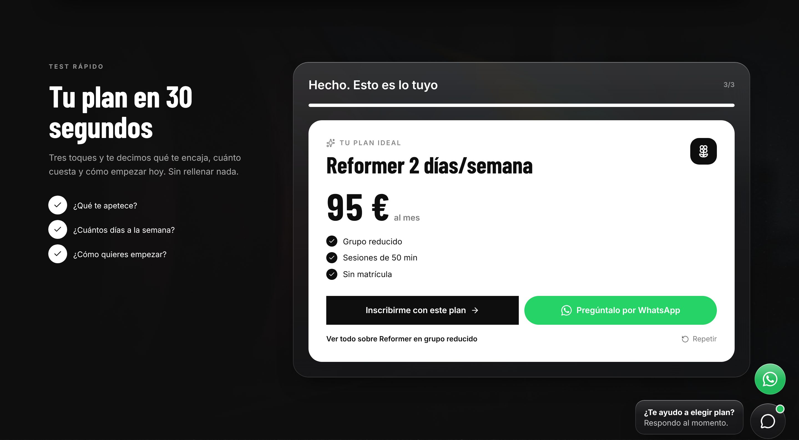

Un intercambio sencillo: 720 estrena web propia y neuro·node gana visibilidad y un caso real que enseñar.
Duración de la colaboración: 6 meses desde la publicación de la web.
720 recibe
neuro·node recibe
| Punto | Acuerdo |
|---|---|
| Implantación de la web | Sin coste para 720. |
| Mantenimiento y cambios | Se compensan con contenido (lámina 04). |
| Cómo se presenta | Como colaboración entre 720 y neuro·node. Las condiciones económicas son confidenciales. |
| Fuera del acuerdo | Panel de gestión, asistente con IA, pagos y reservas online (ampliación opcional). |
La parte pública de la demo que ya conocéis, revisada con vuestros datos reales y lista para Google.
Valor de referencia: [700 € · plan Clientes de la propuesta]

Disciplinas, horario, tarifas, historia, galería y las reseñas reales de Google.
Test que recomienda plan y botones de inscripción y WhatsApp en toda la web.
Responde horarios, precios y dudas frecuentes y deriva al WhatsApp del equipo. Sin coste de uso.
Pensada para quien llega desde Instagram: rápida y con contacto a un toque.
Preparada para búsquedas como «gimnasio Ourense» o «Pilates Reformer Ourense».
Dominio propio, alta en Google y enlace nuevo en la biografía de cada cuenta.
Contenido real, contado por 720, que muestre la web nueva y quién la ha hecho.
Las publicaciones se marcan como colaboración con [@instagram de neuro·node].
| Cuándo | Qué | Detalle |
|---|---|---|
| Lanzamiento | ||
| Semana de publicación | 1 reel en colaboración | Publicado a la vez en el perfil de 720 y en el de neuro·node, enseñando la web. |
| Semana de publicación | 3 o 4 historias | Con mención a neuro·node y enlace a la web. |
| Al publicar | Testimonio en vídeo | Brais, de 30 a 60 segundos: cómo era antes y qué ha cambiado. |
| Al publicar | Reseña escrita | En la ficha de Google de neuro·node. |
| Durante los 6 meses | ||
| Cada mes | 1 historia | Mencionando la web, por ejemplo al anunciar una oferta o una clase nueva. |
| Cuando se pida | Grabación en el centro | Acceso para que neuro·node grabe su propio contenido sobre el proyecto. |
| Siempre | ||
| Pie de la web | «Web creada por neuro·node» | Con enlace a neuro-node.com. |
| Caso de éxito | Permiso de uso | Capturas, logo y resultados de la web en la web, presentaciones y anuncios de neuro·node. |
| Recomendaciones | Referidos | Por cada negocio recomendado que contrate: [un cambio sin coste / % del proyecto]. |
En lugar de una cuota mensual, cada cambio que pida 720 se compensa con contenido.
Los fallos técnicos de la web se corrigen siempre sin coste.
| Tipo de cambio | Ejemplos | A cambio de |
|---|---|---|
| Cambio pequeño | Horario, precio, texto, foto o un aviso temporal. | 1 historia con mención |
| Sección o página nueva | Nueva disciplina, página de un club, una promoción con su página. | 1 reel en colaboración |
| Ampliación al plan Pro | Alta y pago online, reservas con plazas, asistente con IA y panel de gestión. | Presupuesto aparte [importe] |
El panel, los pagos y la IA tienen costes de funcionamiento propios (servidor, base de datos, uso del servicio de IA y la pasarela de pago) y necesitan una puesta en marcha con los datos reales de 720. Se pueden activar en cualquier momento sobre la misma web, sin rehacer nada.
Lo necesario para que la colaboración funcione bien para las dos partes.
Desde la publicación. Al terminar, se puede renovar o pasar al mantenimiento estándar.
El dominio es de 720 desde el primer día.
[a cargo de 720 / incluido por neuro·node]
720 aporta las fotos originales con permiso de uso y confirma horarios, precios y contactos antes de publicar.
Las condiciones económicas de este acuerdo no se comparten con terceros.
Si a los 3 meses no se ha publicado lo acordado, la web pasa al mantenimiento estándar: [35 € / mes].
| Otros puntos | Acuerdo |
|---|---|
| Facturación | [según indiquen las gestorías de cada parte] |
| Textos legales | 720 facilita los datos del titular para el aviso legal y la política de privacidad. |
| Aprobación del contenido | Cada parte puede revisar las publicaciones en las que aparece antes de que salgan. |
Con el acuerdo firmado, la web puede estar publicada en cuanto llegue el material.
1 · Acuerdo
Ajustamos lo que haga falta de este documento y lo firmamos.
2 · Material
Fotos originales, horarios y precios confirmados, y acceso al dominio.
3 · Lanzamiento
Web en línea, enlace en las biografías y reel en colaboración esa misma semana.
Por 720 GYM CLUB
Por neuro·node